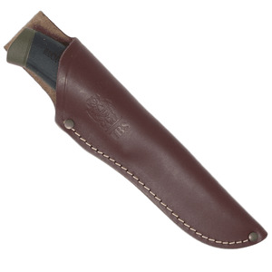
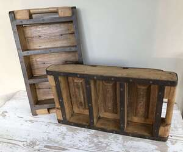

ⲕⲟⲉⲓϩ, ⲕⲁⲓϩ S, ⲕⲁⲉⲓϩ A2, ⲕⲱⲓϩ B nn m, a sheath: 1 Kg 17 51 S, Jer 29 6 SB, Ez 21 3 SB (var ⲑⲏⲕⲓ) κολεός; Jo 18 11 SA2 (B = Gk) θήκη; AP 22 A2 sword into ⲡⲉⲥⲕ., C 89 187 B sword ϧⲉⲛⲡⲉⲥⲕ., Mor 18 53 S ⲧϭⲟⲣⲧⲉ from its ⲕ. b cover, case containing book: ShP 1304 157 S among tools &c ⲟⲩⲕ. ⲛϫⲱⲱⲙⲉ, JTS 5 564 S in book-list, gospels ⲛⲛⲁⲧⲕ. without cover, RE 9 158 S ⲉⲧⲉ]ⲥⲁϣϥ ⲛⲕ.ⲛⲉ namely (books named). c brickmaker's mould, form (?): Mor 38 86 S brickmaker puts brick in his basket (ⲃⲓⲣ) with ⲡⲉϥⲕ. ⲙⲡⲁⲡⲉ ⲧⲱⲃⲉ. d inner corner of eye: P 46 245 S (scala) ⲣⲓⲙⲉ, ⲕⲁⲓϩ ميق (l ماق), ϩⲟ (cf ⲕⲱⲗⲙ); socket (?): Mor 41 170 S martyr seizes bull's horns until each ϩⲉ ⲉϩⲣⲁⲓ ϩⲙⲡⲉϥⲕ. & its ἐγκέφαλος rent in twain. Cf ⲕⲟⲓϩⲓ.
(noun male)
anatomy, tool
sheath [κολεος, θηκη]
cover, case containing book
brickmaker's mould, form (?)
inner corner of eye
socket (?)
cover, case containing book
brickmaker's mould, form (?)
inner corner of eye
socket (?)


1: sheath, 2: cover, case (containing book), 3: (brickmaker's) mould, form, 4: inner corner of eye, 5: socket
complete
132a
See also:
| view | ⲕⲱⲗⲙ S ⲕⲱⲗⲙⲉ A ⲭⲱⲗⲉⲙ B | (noun male) corner of eye [κανθος]794 |
| view | ⲕⲟⲓϩⲓ B | (noun male) ? same as ⲕⲟⲉⲓϩ2892 |